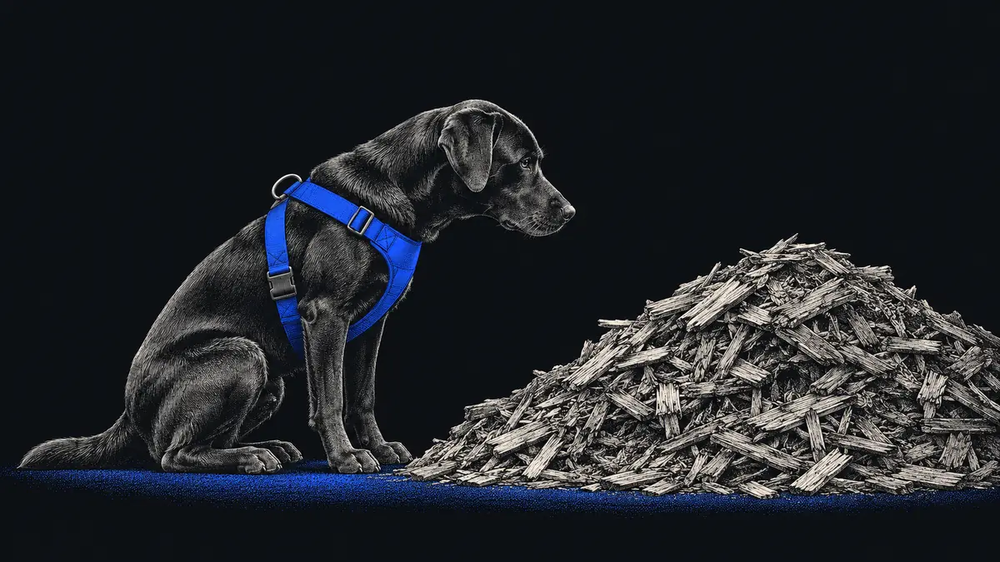

Shelby Dixon · Hawaiʻi
After the alert,
there’s still
a search.
Could tiny vibrations help a crew find what’s hidden in a pile of mulch?
Meet TRACE-CRB
Early research prototype. Detection of beetle larvae has not yet been demonstrated.
The question
Less searching.
Better evidence.
A tree takes years to become part of a place. This project starts with one small part of protecting palms: finding the beetle larvae hidden in the material around them.
A dog can alert an inspection crew to a suspect pile. Locating the coconut rhinoceros beetle larvae inside can still take digging.
I’m exploring whether a small contact sensor could help crews narrow that search. Think of a stethoscope for vibrations: the sensor touches a surface and records movement traveling through it. It does not yet tell us whether a larva is there.
The intended users are people inspecting mulch and green waste. The aim is to give them useful information about where to look next.
Where the work stands
A recorder is built.
I’ve built an early contact recorder and software for viewing and saving its recordings. Bench tests have shown a response to taps and vibration.
A vibration is only a clue.
A vibration on a screen is not proof of a beetle. Background movement and handling can appear in the recording too. The recordings need careful comparison.
The first larval test comes next.
The next goal is supervised recordings of comparable material with and without confirmed larvae, under similar conditions. That is the first test of whether this approach can distinguish something useful.
One test at a time
Let the results set the next step.
First phase · $5,000 goal
Improve the recorder and make supervised recordings of comparable material with and without confirmed beetle larvae.
Next · more varied conditions
If the first results justify it, test across a wider range of real conditions. Set that budget from what the first phase teaches us.
Later · other hidden pests
If the approach proves useful, explore other pests, including termites. Each would need separate testing. A budget for that work has not been set.
Let’s talk